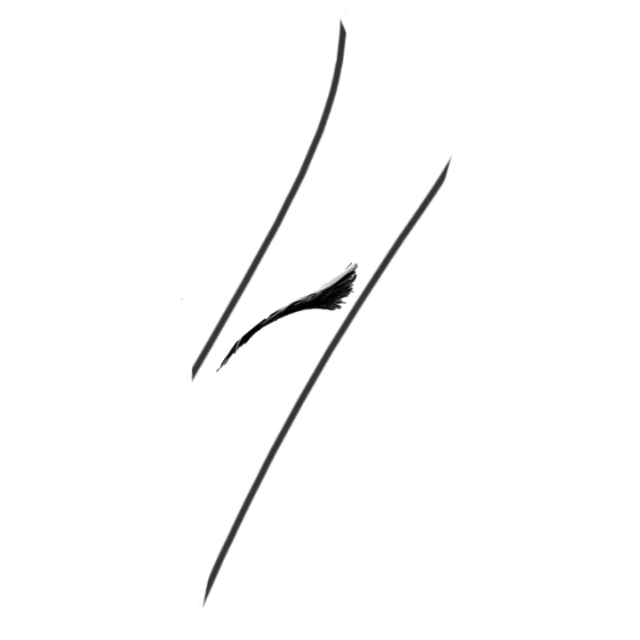

StructurRizAsa
-------Sassyetratie-------
setelah kekuatan ditegakan dan Kewajiban dipenuhi
maka gunakanlah waktu untuk memperbaiki diri
meningkatkan pada arah kebaikan dan kebenaran hakiki
serta gunakanlah sumber daya yang ada
serta kesempatan yang tersedia
dengan kemampuan mu untuk mencapai 3 hablum mu
-3hablum
-AKRHPSTEIM/AnnalisaObserva
-Timeblock w/ soci |
#AmateaDefault || TimeBlocking
Time :
| 00.00 - 04.00 | Terlelap |
| 04.00 - 06.00 | Shubuh |
| 06.00 - 07.00 | Awarefulness, Self Esteem, Personality, Goals |
| 07.00 - 08.30 | Belajar I |
| 08.30 - 09.30 | Duhaa |
| 09.30 - 11.00 | Belajar II |
| 11.00 - 13.00 | Dzuhur |
| 13.00 - 15.00 | Belajar III |
| 15.00 - 16.00 | Ashar |
| 16.00 - 17.00 | Belajar IV |
| 17.00 - 18.00 | Istirahat |
| 18.00 - 19.00 | Maghrib |
| 19.00 - 21.00 | Isyak |
| 21.00 - 00.00 | Tidur |
|
>#Tips iimaan
- Sebelum shubuh (03.00) dapat dimanfaatkan untuk Sahur untuk syam agar mengendalikan Hawa Nafsu
- gunakan waktu sholat 5 waktu semaksimal serta seoptimal mungkin
- melupakannya adalah cara efektif untuk menghindari Maksiat
|
Done on
09.00 / Duhaa
- Taubathan
16.00 / Ashar
-One Day One Juz
Saran:
{AIMer} : Aware on Start [active by ceramah/talkative]
{STAB-1lie} : CpS Neouro wps edit (situation settings)
Watchout schedule,Agenda ,Todolist and Assignment
all_freetodo
less consume only productive
#DefaultScheduling:
Systemasa
simple todo:

Jangan lupa untuk selalu berDzikir mengingat Allahsubhanahuwataala
Sholawat Nabi Muhammad Sallawllahu alaihi wa sallam
Istighfar sepuasnya
Dzikir Subhanallah 33 kali
Dzikir Alhamdulillah 33 kali
Dzikir Allahuakbar 33 kali
Subhanallah wal Hamdulillah laa ilaha illallah waallahu akbar
Laa ilaa ha illaallah wahdahulaa syarikaalahu, Lahul mulk wa Lahul Hamd, Yuhyii wa Yumiitu wa Hua 'ala quli Sai'in Qodir
#Destructive Regresion
Chaotistic Rebelion
unHoldness uncontrollable
Ambiguous Klausal
Self-Rejecting Art
#Self-Restruktucturization/Construction_phase
Basic [ template,content,concept]
SchedulePlanning || mapping
Decision problems [problema | consclusion] @mind
Decision problems [problema | consclusion] @action
Lack and Luck in prepare
Self-conscious & Self-Image Esteem-Awareness
Harmony within Tiredness - Lone(ly)wolf path
Jaga diri dari kekacauan berantai
Hargai Diri ，Hargai Peluang, Hargai Nikmat, Hargai Luang dan Hargai Juang.
X-Confederate Awareness
[Ds]Desire syertia
[Xs]irizuina o fesa
[Int]Counter Aana
[As]Vein Abstrasia
[Sv]Prable ie Slova
[...]other
Critism and Correctcy
Cortrait Analyst
#Exclusion
Problema_insider
the Thinker
Sofia
Pronesis
FutureFixation:Prepareness & SelfReminder